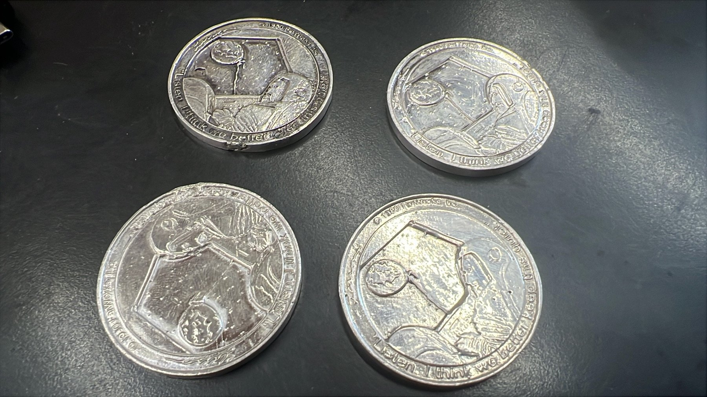
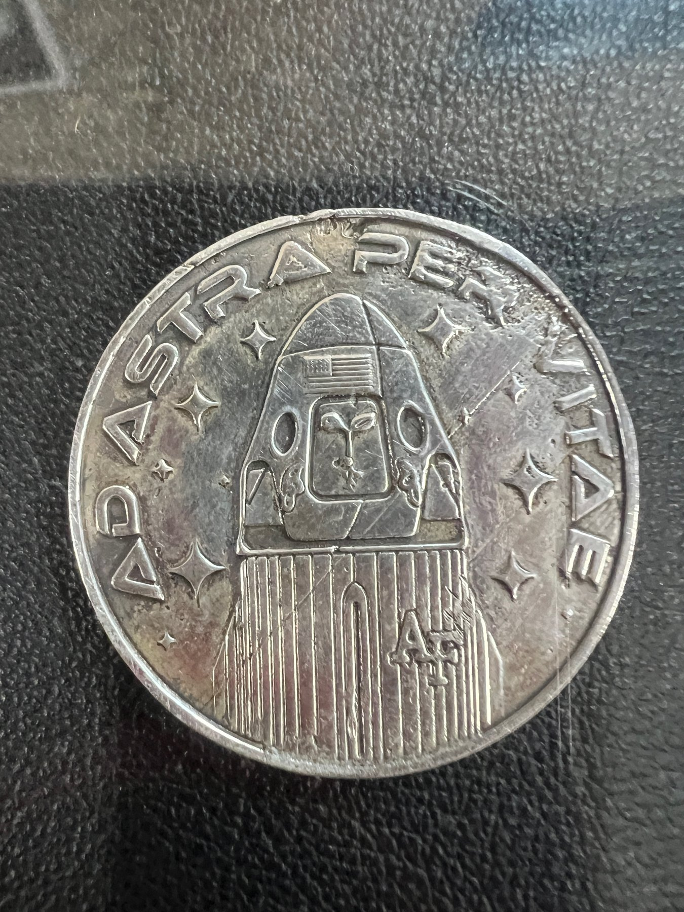
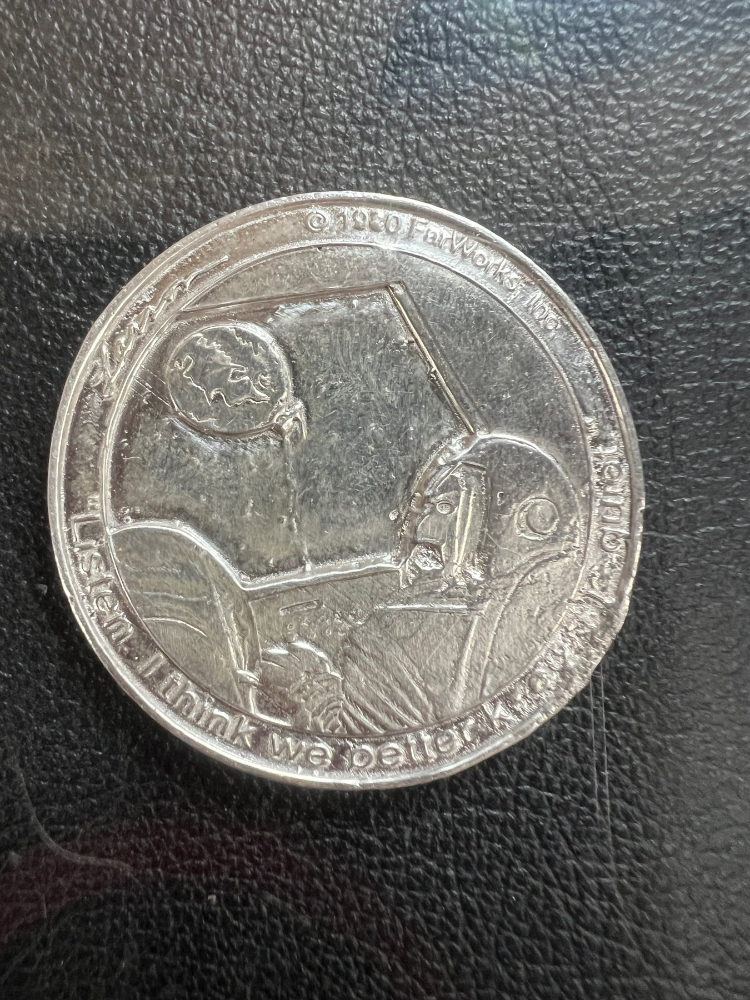
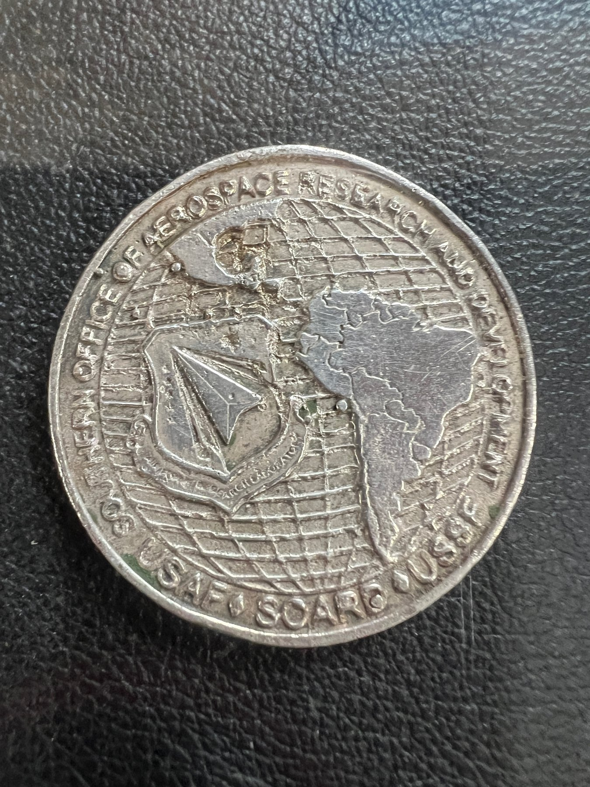
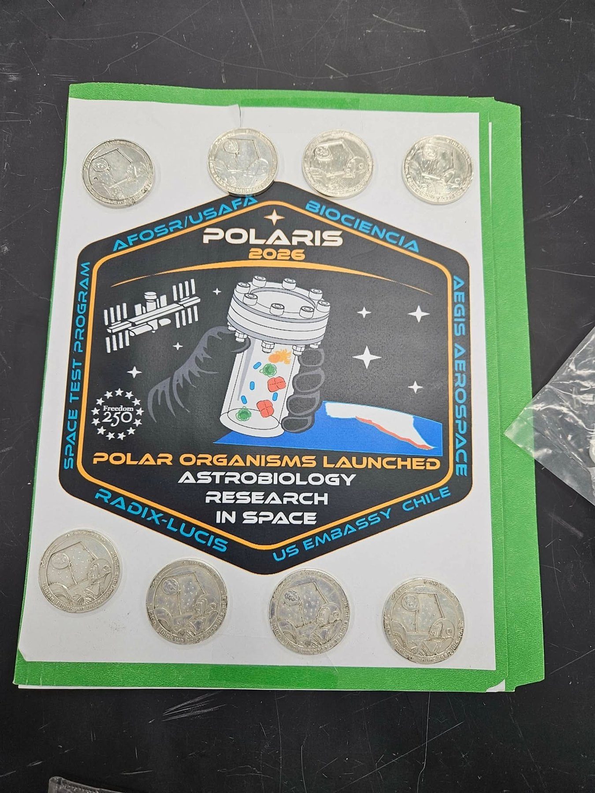
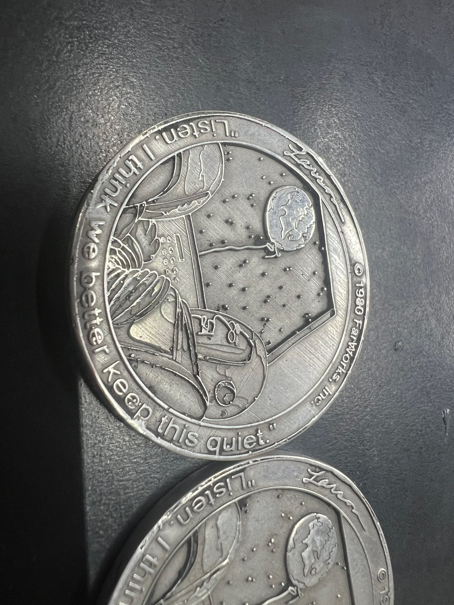
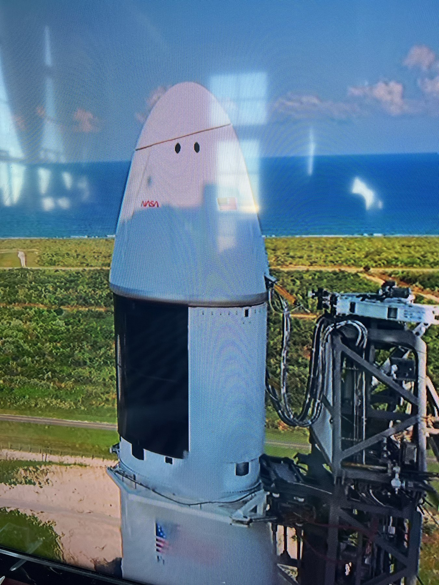

Objects / 2026 / U.S. Air Force Academy / International Space Station
Far Side ISS Commemorative Coin
Cast silver coins for a Space Force research mission

An edition of eight hand cast .999 silver coins carrying a Gary Larson Far Side image to the International Space Station.
The work
A mission team at the U.S. Air Force Academy wanted to honor Gary Larson and the curiosity The Far Side has inspired in a generation of scientists, by flying one of his images to the International Space Station and returning it to him. The image chosen was his Earth as a balloon, “Listen, I think we better keep this quiet,” first published October 4, 1980. The other face carries the mission's Ad Astra imagery.
The material question
It could not be a minted challenge coin. A tribute to one artist had to be an object made by hand, in a tiny edition, with no permanent die, every file and mold accountable to the rights holders. And it had to fit a spaceflight payload: small, light, and cleared for flight.
The making
We translated Larson's 2D drawing into 3D relief, a conversion the mission lead called amazing work, then printed each coin in castable jewelry resin, burned it out, and poured it in .999 silver, about 1.5 inches across and an eighth of an inch thick. The final geometry needed a much larger cup and sprue than early tests, so each coin took far more silver to pour than it weighs. Files and production materials could be relinquished or destroyed at the end of the run, as the permissions required.
In place
After nearly two years of permissions, proofs and payload changes, the edition of eight coins launched on May 15, 2026 aboard the Polaris mission, bound for the International Space Station. They have not yet come back to Earth.
Details
- Year
2026 - Location
U.S. Air Force Academy / International Space Station - Category
Objects - Materials
.999 silver, lost wax cast from 3D printed resin
Credits
- Mission coordination: Maj. Travis Tubbs, U.S. Air Force Academy
- Concept: Kyle Melton
- Far Side artwork courtesy FarWorks, Inc.
Studio
- ChiLab Studio
- Chicago, Illinois
- Established 2013






Bring us a drawing,
a model, or a hunch.
The studio
Specialty material projects for architecture, interior design, public art, and the fine arts.
ChiLab Studio, Chicago, Illinois. Established 2013.
What we do
- Metal casting
- Glass
- Finishes
- Digital fabrication
- Metal fabrication
- Restoration
- Project management
Contact
info@chilabstudio.com
chilabstudio.com
Instagram @chilabstudio